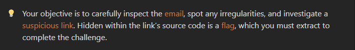
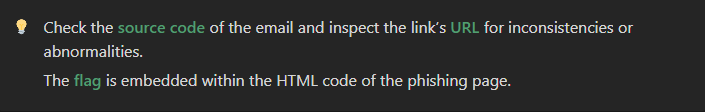

Xploit
HomeIntroduction:
Phishing is one of the most common cyberattacks, where attackers disguise themselves as trustworthy entities to steal sensitive information. In this challenge, you'll encounter a realistic phishing attempt, and your task is to identify the red flags and avoid falling victim to the scam.
Scenario:
You've received an email that seems to come from your organization's CEO, requesting immediate action on a financial matter. At first glance, the email appears legitimate, but there are subtle clues that hint it might be a phishing attempt.
Objective:
- Identify the phishing attempt: Use your skills to detect the signs that make the email suspicious.
- Extract the flag: The phishing website’s HTML source code holds the key.
Skills Required:
- Phishing Detection: Recognize the signs of a phishing email by scrutinizing its details like sender address, language, and the legitimacy of the links.
- Email Security: Know how to inspect email headers and links for irregularities.
- Basic HTML Knowledge: Understand how to navigate the HTML source code of a webpage to find hidden content.
How to Play:
- Multiple Emails: You will be presented with several emails that look similar. One of them appears legit but contains subtle signs of phishing.
- Search for Clues: Analyze each email carefully. Look for red flags like:
- Odd sender email addresses (spoofing)
- Suspicious language, grammar, or tone
- Strange or mismatched links (hover over links to see where they actually lead)
- Submit Your Findings: Once you identify the phishing email, submit your answer by extracting the flag hidden in the suspicious link.
Hint:
Phishing Red Flags to Watch Out For:
- Sender Address: Phishing emails often come from addresses that look legitimate at a glance but contain subtle errors like extra characters or misspellings.
- Urgency and Pressure: Phishing emails create a sense of urgency to pressure you into acting quickly without careful thinking.
- Links and Attachments: Hover over any links in the email to see where they lead. Phishing links often don’t match the displayed text.
- Grammar and Formatting Issues: Legitimate organizations typically have polished communication. Look out for odd phrasing or errors.
- Requests for Personal Information: No legitimate organization will ask for sensitive information (passwords, financial details) over email.
Conclusion:
This challenge is designed to sharpen your ability to spot phishing attacks, which are becoming more sophisticated. By learning to detect the telltale signs of phishing emails, you’re helping to create a safer digital environment for yourself and your organization.
Stay vigilant, trust your instincts, and always verify before taking any action when it comes to emails requesting sensitive information!